Od niepamiętnych czasów ludzie interesowali się astronomią, tym jak wygląda wszechświat, w jaki sposób jest w nim umieszczona Ziemia. Czy Ziemia kręci się wokół Słońca, czy na odwrót, czy Ziemia jest kulą, czy dyskiem. Dzisiaj prawie każde dziecko wie, że Ziemia nie jest dyskiem leżącym na skorupie wielkiego żółwia. Choć wydaje się to śmieszne, ale przez wiele wieków taki pogląd znajdował wielu zwolenników. Dopiero osiągnięcia takich uczonych jak Kopernik, Galileusz, czy Newton dały początek nowożytnej nauki, były przełomem i dały podstawy do osiągnięć ich następców.
Od niepamiętnych czasów ludzie interesowali się astronomią, tym jak wygląda wszechświat, w jaki sposób jest w nim umieszczona Ziemia. Czy Ziemia kręci się wokół Słońca, czy na odwrót, czy Ziemia jest kulą, czy dyskiem. Dzisiaj prawie każde dziecko wie, że Ziemia nie jest dyskiem leżącym na skorupie wielkiego żółwia. Choć wydaje się to śmieszne, ale przez wiele wieków taki pogląd znajdował wielu zwolenników. Dopiero osiągnięcia takich uczonych jak Kopernik, Galileusz, czy Newton dały początek nowożytnej nauki, były przełomem i dały podstawy do osiągnięć ich następców.
Prawo powszechnego ciążenia
Prawo to zostało sformułowane pod koniec XVII w. przez Newtona. Słynna legenda głosi, że zajął się tym problemem kiedy to spadające jabłko uderzyło go w głowę. Najprawdopodobniej jednak jabłko oszczędziło głowę tego uczonego, a jedynie (jak Newton pisze w pamiętniku) zainspirowało go. I tak z tej inspiracji powstało prawo powszechnego ciążenia które nam mówi:
|
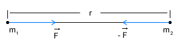
Jednakże wiemy, że siła ta nie jest równa:
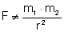
Aby można było postawić znak równości należy wprowadzić współczynnik proporcjonalności, zwany też stałą grawitacji:
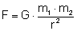 , gdzie stała grawitacji ma wartość:
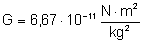
Zastanówmy się, czy siły grawitacji są stosunkowo duże, czy małe. Umieśćmy dwie kule o masie 1kg każda w odległości 1m od siebie. Nie zaobserwujemy zmian ich pozycji w wyniku wzajemnego oddziaływania grawitacyjnego, wiemy jednak, że takie oddziaływanie istnieje więc wyliczmy wartość sił grawitacyjnych:
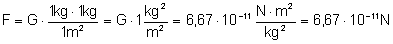
Jak widzimy siły grawitacji są bardzo niewielkie. Jak się jednak okazuje są bardzo istotne we wszechświecie, bo to one utrzymują układy planetarne i galaktyki w takim kształcie jakie są obecnie.
Prawa Keplera
Patrząc na nocne niebo możemy dostrzec wiele obiektów. Kiedy spojrzymy na niebo po jakimś czasie np. po dwóch godzinach, zauważymy, że te obiekty zmieniły swoje położenie na niebie. Takie spostrzeżenie stało się podstawą do sformułowania geocentrycznego systemu budowy wszechświata. Taki system powstał w II wieku n.e. a opisał go Klaudiusz Ptolemeusz. System ten zakładał, że Ziemia znajduje się w centrum wszechświata. Wokół ziemi krążą kolejno Księżyc, Wenus, Merkury, Słońce, Mars, Jowisz, Uran i gwiazdy. Wszystkie te obiekty znajdowały się w tzw. sferach. A same planety i gwiazdy poruszały się bo bardzo skomplikowanych drogach. Ziemia znajdowała się w środku okręgu zwanego deferensem. Po tym deferensie poruszał się środek innego okręgu zwanego epicyklem. Dopiero po epicyklu poruszać się miała planeta.
Jednakże obserwowane na niebie obiekty nie znajdowały się w tym miejscu jak by to wynikało z przeprowadzonych obliczeń bazującym na tym systemie. Dlatego uczeni dodawali nowe epicykle by obliczenia zgadzały się z rzeczywistością. W końcu doszło do tego, że ten system stał się tak skomplikowany i niepraktyczny, że jakakolwiek praca w jego oparciu była bardzo uciążliwa. Mimo "udoskonaleń" jakie wprowadzano do tego systemu, ciągle obliczenia i przewidywania miejsca położenia planet nie zgadzały się z rzeczywistością. Dopiero Mikołaj Kopernik odszedł od tej koncepcji i opisał system heliocentryczny, czyli taki gdzie Słońce jest środkiem układu planetarnego, a Ziemia jest jedną z planet krążących wokół Słońca. Teoria Kopernika zawierała jeszcze wiele uproszczeń, ale stała się przełomem.
Jan Kepler mając do dyspozycji bogaty zbiór opisów obserwacji zgromadzonych przez Tychona de Brahe, rozwinął teorię Kopernika i ułożył trzy prawa, które rządzą ruchami planet.
Pierwsze prawo Keplera
|
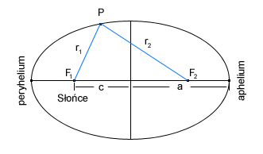
Jak się okazało Kopernik się pomylił twierdząc że planety krążą po okręgach. Kepler zamienił te okręgi na elipsy. Jednak elipsy planet w naszym układzie są tak zbliżone do okręgów, że zadziwiający jest fakt, w jaki sposób Kepler odkrył, że torem planet są elipsy a nie okręgi.
Drugie prawo Keplera
|
Z tego prawa wynika, że planety nie mają stałej prędkości liniowej. Okazuje się, że jeżeli znajduj się bliżej Słońca to poruszają się szybciej niż wówczas gdy znajduję się od słońca dalej.
Trzecie prawo Keplera
|
To prawo pozwala nam już na pewne obliczenia. Wielką półoś orbity zwana jest też średnią odległością planety od Słońca. Więc znając odległość Ziemi od Słońca, jej czas pełnego obiegu (okres) i czas pełnego obiegu innej planety, to możemy wyznaczyć jej odległość od Słońca.
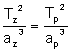
gdzie Tz jest okresem Ziemi, az jest średnią odległością Ziemi od Słońca, Tp i ap to okres i średnia odległość dowolnej planety w naszym układzie słonecznym. Wyliczmy więc ile wynosi średnia odległość od Słońca planety Merkury:
Tz=1 rok
az=1 AU - czyli jednostka astronomiczna: 1 AU = 150 000 000 km = 1,5 * 108 km - tyle właśnie wynosi średnia odległość Ziemi od słońca.
TM=0,241 - okres obiegu Merkurego wokół Słońca liczony w latach (ziemskich).
aM - ? wyliczymy średnią odległość od słońca:
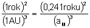
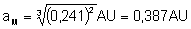
Tyle rzeczywiście wynosi średnia odległość Merkurego od Słońca liczona w jednostkach astronomicznych.
Natężenie pola grawitacyjnego
Wyobraźmy sobie przestrzeń w kosmosie oddaloną od wszelkich ciał. Jeżeli w punkcie tej przestrzenie umieścimy masę próbną, to zgodnie z przewidywaniami nie będzie działać na niego żadna siła. Jeżeli zaś umieścimy tę masę próbną blisko jakiegoś obiektu, np. planety, to na ciało oczywiście będzie działać siła. Przy czym siła ta nie jest wywołana bezpośrednim kontaktem planety i tej masy próbnej. Planeta oddziaływuje na niego "na odległość". Mówimy, że ciało (w naszym przykładzie planeta) o masie "M" wytwarza pole grawitacyjne, które zmienia właściwości przestrzeni wokół siebie w ten sposób, że jeżeli w tym polu umieścimy ciało o masie "m" to zadziała na nie siła określona prawem ciążenia.
Polem grawitacyjnym nazywamy więc własności przestrzeni, które informują nas jaka siła będzie działać na ciało "m" kiedy je tam umieścimy. Z takiego rozumowania uzyskujemy zależność:
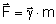
Patrząc na tę wielkość z innej strony możemy powiedzieć, że natężenie pola grawitacyjnego w danym punkcie przestrzeni jest równe liczbowo wartości siły grawitacyjnej działającej na ciało o masie 1 kg umieszczone w tym punkcie.
Zobaczmy jakim wzorem wyraża się natężenie pola grawitacyjnego i jaka jest jego jednostka:
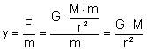
Jednostka natężenia pola:
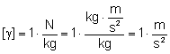
Widzimy, że jednostka jest taka sama jak jednostka przyśpieszenia. Okazuje się, że wartość natężenia pola w danym punkcie przestrzeni równa jest liczbowo także przyśpieszeniu grawitacyjnemu jakie uzyska to ciało po umieszczeniu go w tym punkcie przestrzeni.
Z tej własności wiemy jaki jest natężenie pola grawitacyjnego przy powierzchni Ziemi:
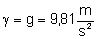
Linie pola grawitacyjnego
W naszych rozważaniach używamy zwykle dwóch rodzajów pól grawitacyjnych: jednorodnych i centalnych. Omawiając pola niesposób niewspomnieć o liniach pola. Są to kierunki do których styczne są wektory sił grawitacyjnych. Przy powierzchni Ziemi mamy do czynienia z jednorodnym polem grawitacyjnym. Na każde ciało które posiada masę działa siła, której wektor ma kierunek pionowy. Więc wszystkie linie pola grawitacyjnego przy powierzchni Ziemi wyznaczają pion.
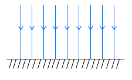
Ale jeżeli patrzymy na Ziemię z daleka lub traktujemy ją jako punkt materialny, to zauważymy że wektor siły działającej na ciało znajdujące się nad biegunem będzie prostopadły do wekora siły działającej na ciało znajdujące się nad równikiem. Jeżeli narysujemy wiele takich linii to uzyskamy efekt promienii rozchodzących się ze Słońca. W środku źródło pola grawitacyjnego, a dookoła niego promieniście rozłożone linie tego pola.
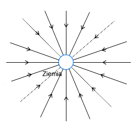
Praca w polu grawitacyjnym
Wykonajmy pewne doświadczenie myślowe. Zadaniem tego doświadczenia będzie wykonanie pracy polegającej na przemieszczeniu ciała z punktu A do punktu B, przy czym oba punkty znajdują się w jednym pionie ale na różnych wysokościach (punkt A leży pod punktem B). Krótko mówiąc będziemy podnosić ciało i obliczymy pracę. Ciało przemieszczamy ruchem jednostajnym prostoliniowym, a siła jaką działamy równa jest co do wartości sile grawitacji. W miarę zwiększania wysokości siła ta jest coraz mniejsza. Więc siła jaką działamy na początku (w punkcie A) jest większa od tej której używamy na końcu drogi (w punkcie B). Siła maleje odwrotnie proporcjonalnie do kwadratu odległości więc wyliczając średnią siłę posłużyć się musimy tzw. średnią geometryczną:
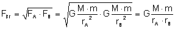
Gdzie:
FA - siła działająca w punkcie A
FB - siła działająca w punkcie B
rA i rB - odległość od źródła pola grawitacyjnego punktów A i B
M - masa źródła pola grawitacyjnego
m - masa ciała nad którym wykonujemy pracę.
Obliczmy zatem wykonaną pracę:
α - kąt między wektorem średniej siły a wektorem przesunięcia
Zauważmy, że kąt α=0° więc cos(α)=1, gdybyśmy ciało opuszczali z punktu B do punktu A to α=180° a cos(α)=-1, więc praca miała by wartość ujemną. Uniwersalny wzór, niezależnie od tego czy opuszczamy ciało, czy podnosimy wygląda następująco:
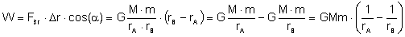
Praca jest dodatnia jeżeli ciało podnosimy, a ujemna jeżeli ciało opuszczamy.
Z ostatniego wzoru wynika, że praca nie zależy od drogi po jakiej poruszało się ciało gdy wykonywaliśmy pracę nad nim. Zależy jedynie od punktu początkowego i końcowego. Jeżeli ciało przebędzie drogę Δr po prostej lub "na około" to praca będzie taka sama. Takie pole w którym praca nie zależy od drogi, a jedynie od położenia początkowego i końcowego ciała nazywamy polem zachowawczym.
Energia potencjalna w polu grawitacyjnym
W poprzednich tematach liczyliśmy energię potencjalną ciała znajdującego się na pewnej wysokości, ale stosunkowo blisko powierzchni Ziemi. W takiej sytuacji siłę działająca na ciało można uznać za stałą (nie zmieniającą się wraz z wysokością). Jeżeli jednak rozpatrujemy duże wysokości, to już nie możemy tak uprościć rozważań. Siła zmienia się wraz z wysokością, więc i energię potencjalną musimy liczyć w inny sposób.
Wiemy, że energia równa jest wykonanej pracy nad ciałem. Jeżeli wykonamy taką pracę i przemieścimy ciało z miejsca gdzie nie ma ono energii potencjalnej do miejsca gdzie tę energię ma, to praca jaką wykonamy będzie równa tej energii. Zastanówmy się gdzie w przestrzeni ciało nie ma energii potencjalnej? Jeżeli oddalimy ciało od źródła pola grawitacyjnego tak dlatego, że nie będzie na niego działała żadna siła ze strony tego źródła to w tym miejscu nie będzie to ciało mieć energii potencjalnej.
Przenieśmy więc ciało z bardzo daleka (z nieskończoności) do punktu oddalonego o r od źródła pola grawitacyjnego. Ciało to będzie się zbliżać do źródła. Pamiętamy z poprzedniego paragrafu, że jeżeli ciało opuszczamy (zbliżamy do źródła) to praca jaką wykonujemy ma wartość ujemną. Więc nasza energia potencjalna będzie miała wartość ujemną:
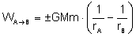
Energia potencjalna jest więc ujemna. A oznacza to, że prace wykonuje siła przyciągania, a nie jak w poprzednich przypadkach siła która równoważyła siłę przyciągania.
Potencjał grawitacyjny
Omówiliśmy już taką wielkość jak natężenie pola grawitacyjnego, która mówi nam jak silne jest pole wytworzone przez dane źródło. Wartość natężenia informowała nas o sile jaka zadziała na jednostkową masę (np. 1 kg) umieszczoną w danym punkcie pola. Jest jeszcze inna wielkość fizyczna która charakteryzuje pole grawitacyjne. Jest nią potencjał grawitacyjny. Ta wielkość informuje nas jaka będzie energia potencjalna ciała o jednostkowej masie (np. 1 kg) umieszczonego w danym punkcie tego pola. Potencjał wyraża się wzorem:
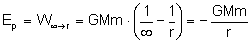
Sprawdźmy od czego zależy potencjał grawitacyjny. W tym celu rozwińmy nasz wzór:
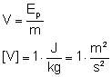
Jak widać potencjał nie zależy od masy ciała umieszczonego w polu grawitacyjnym, lecz od masy źródła i odległości od niego.
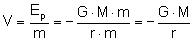
Znając potencjał grawitacyjny w punktach A i B łatwo możemy obliczyć pracę jaką należy wykonać by ciało o masie "m" przemieścić z jednego punktu do drugiego:
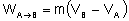
Pierwsza prędkość kosmiczna
W XX w. nastąpił wielki przełom w dziejach ludzkości. Otóż udało się człowiekowi opuścić Ziemię i udać się do kosmosu. Lecz takie czynności stwarzają nowe zadania dla fizyków. Potrzebne stało się liczenie jakie prędkości należy nadać rakiecie żeby wystartowała i wyniosła statek na orbitę, albo by dolecieć do Księżyca. Jedna z takich charakterystycznych prędkości została nazwana pierwszą prędkością kosmiczną i mówi nam jak szybko musi poruszać się ciało, by mogło lotem bezsilnikowym okrążyć Ziemię po orbicie tuż przy jej powierzchni. Jest to najmniejsza możliwa prędkość jaką może mieć sztuczny satelita Ziemi. Ale w rzeczywistości satelity znajdują się dużo wyżej nad powierzchnią ok. 160 km nad Ziemią, bo poniżej tej wysokości występują opory powietrza.
Siła ciężkości jaka działa na ciało musi być zrównoważona. W nieinercjalnym układzie odniesienia tą równoważącą siłą jest odśrodkowa siła bezwładności więc:
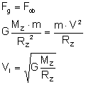
Gdzie MZ i RZ to masa i promień Ziemi. Jeżeli ze wzoru na natężenie pola grawitacyjnego wyliczymy G to otrzymamy:
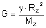
Tę wartość możemy teraz podstawić do wzoru na pierwszą prędkość kosmiczną. Skorzystajmy jeszcze z własności natężenia pola grawitacyjnego która mówi, że jest ma ona taką samą wartość jak przyśpieszenie grawitacyjne (przy powierzchni ziemi równe "g").
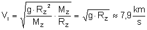
Druga prędkość kosmiczna
Ta prędkość informuje nas jak musimy rozpędzić statek kosmiczny aby opuścił pole grawitacyjne Ziemi i udał się w nieskończoność.
Jeżeli ciało zostanie wyrzucone z Ziemi z prędkością większą od pierwszej a mniejszą od drugiej prędkości kosmicznej to jej ruch będzie następujący: statek poruszać się będzie w przestrzeń kosmiczną z prędkością coraz mniejszą, aż do momentu gdy siły grawitacyjne Ziemi zatrzymają ten statek. Następnie te siły nadadzą przyśpieszenie skierowane w stronę Ziemi i w ten sposób statek zawróci. Tor po jakim będzie się poruszał będzie elipsą.
Jeżeli zaś statek wyrzucimy z Ziemi z drugą prędkością kosmiczną to siły grawitacyjne będą powodować zmniejszenie prędkości statku a w nieskończoności go zatrzymają, lecz nie zdołają go zawrócić. Jeżeli prędkość początkowa będzie choć trochę większa od drugiej prędkości kosmicznej to ciało nie zatrzyma się.
Wyliczając drugą prędkość kosmiczną posłużymy się własnością, że całkowita energia mechaniczna ciała w nieskończoności równa jest zeru. Energia kinetyczna równa jest zeru ponieważ ciało się w nieskończoności zatrzyma. Także energia potencjalna będzie równa zero, co wynika bezpośrednio ze wzoru.
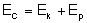
Na początku energia statku wynosi:
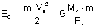
W nieskończoności:
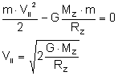
Łatwo zauważyć że:
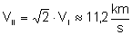